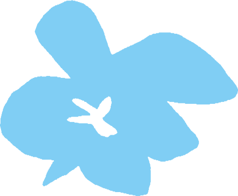

Mijn naam is Yaro Vennekens en ben 20 jaar oud 🎉
en ben een graduaat student programeren aan Thomas More te Geel 🇧🇪

| Opleiding | Jaartal | Stage's | Extra Certificaten | Eindwerk | School |
| 7 jaar TSO Se-n-Se Auto Mechanica | 2022-2023 | BMW & Mercedes-Benz | HEV2 + Airco (Voertuigen) | Toyota Pro Ace Electric spanningsvrij zetten | TISP (Mol) |
| 6de jaar TSO Automechancia | 2021-2022 | Stessens Fendt | / | Didactische bord centrale deurvergrendeling | TISP (Mol) |
| Taal | Spreken | Schrijven | Begrijpen (Lezen en Luisteren) | |
| 🇳🇱 Nederlands | Zeer goed | Goed | Goed | |
| ğŸ´ó §ó ¢ó ¥ó ®ó §ó ¿ Engels | Goed | Goed | Goed | |
| 🇫🇷 Frans | Matig | Matig | Goed | |
| 🇩🇪 Duits | Matig | Matig | Goed |  |